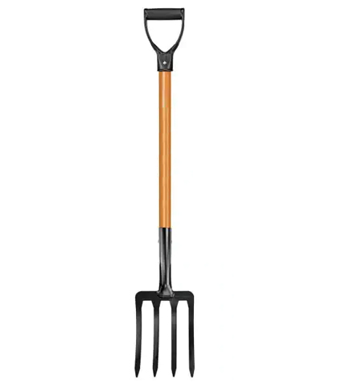

chisel tool is used for cutting or carving hard materials such as metal, stone or wood.
pitchfork is a long-handled fork that has two or three long somewhat curved prongs and is used especially in pitching hay.

saws are used to cut wood into different shapes.